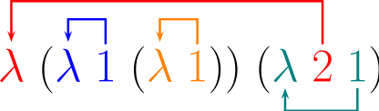

幸福迟了一夜才来。
类型系统是指一种根据所计算出值得种类对词语进行分类从而证明某程序行为不会发生的可行语法手段。
# 无类型系统# 无类型算术表达式# 语法
项的集合是最小集合T \mathcal{T} T
{ t r u e , f a l s e , 0 } ⊆ T \{true,false,0\}\subseteq \mathcal{T} { t r u e , f a l s e , 0 } ⊆ T 如果t 1 ∈ T t_1\in\mathcal{T} t 1 ∈ T { s u c c t 1 , p r e d t 1 i s z e r o t 1 } ⊆ T \{succ\;t_1,pred\;t_1\;iszero\;t_1\}\subseteq \mathcal{T} { s u c c t 1 , p r e d t 1 i s z e r o t 1 } ⊆ T
如果t 1 , t 2 , t 3 ∈ T t_1,t_2,t_3\in\mathcal{T} t 1 , t 2 , t 3 ∈ T i f t 1 t h e n t 2 e l s e t 3 ∈ T if\;t_1\;then\;t_2\;else\;t_3\in\mathcal{T} i f t 1 t h e n t 2 e l s e t 3 ∈ T
# 对项的一些归纳定义常量集合：
C o n s t s ( t r u e ) = { t r u e } ; C o n s t s ( f a l s e ) = { f a l s e } ; C o n s t s ( 0 ) = { 0 } ; C o n s t s ( s u c c t 1 ) = C o n s t s ( t 1 ) ; C o n s t s ( p r e d t 1 ) = C o n s t s ( t 1 ) ; C o n s t s ( i s z e r o t 1 ) = C o n s t s ( t 1 ) ; C o n s t s ( i f t 1 t h e n t 2 e l s e t 3 ) = C o n s t s ( t 1 ) ∪ C o n s t s ( t 2 ) ∪ C o n s t s ( t 3 ) Consts(true)=\{true\};Consts(false)=\{false\};Consts(0)=\{0\};\\
Consts(succ\;t_1)=Consts(t_1);Consts(pred\;t_1)=Consts(t_1);Consts(iszero\;t_1)=Consts(t_1);\\
Consts(if\;t_1\;then\;t_2\;else\;t_3)=Consts(t_1)\cup Consts(t_2)\cup Consts(t_3)
C o n s t s ( t r u e ) = { t r u e } ; C o n s t s ( f a l s e ) = { f a l s e } ; C o n s t s ( 0 ) = { 0 } ; C o n s t s ( s u c c t 1 ) = C o n s t s ( t 1 ) ; C o n s t s ( p r e d t 1 ) = C o n s t s ( t 1 ) ; C o n s t s ( i s z e r o t 1 ) = C o n s t s ( t 1 ) ; C o n s t s ( i f t 1 t h e n t 2 e l s e t 3 ) = C o n s t s ( t 1 ) ∪ C o n s t s ( t 2 ) ∪ C o n s t s ( t 3 )
项的长度：
s i z e ( t r u e ) = s i z e ( f a l s e ) = s i z e ( 0 ) = 1 ; s i z e ( s u c c t 1 ) = s i z e ( p r e d t 1 ) = s i z e ( i s z e r o t 1 ) = s i z e ( t 1 ) + 1 ; s i z e ( i f t 1 t h e n t 2 e l s e t 3 ) = s i z e ( t 1 ) + s i z e ( t 2 ) + s i z e ( t 3 ) + 1 ; size(true)=size(false)=size(0)=1;\\
size(succ\;t_1)=size(pred\;t_1)=size(iszero\;t_1)=size(t_1)+1;\\
size(if\;t_1\;then\;t_2\;else\;t_3)=size(t_1)+size(t_2)+size(t_3)+1;
s i z e ( t r u e ) = s i z e ( f a l s e ) = s i z e ( 0 ) = 1 ; s i z e ( s u c c t 1 ) = s i z e ( p r e d t 1 ) = s i z e ( i s z e r o t 1 ) = s i z e ( t 1 ) + 1 ; s i z e ( i f t 1 t h e n t 2 e l s e t 3 ) = s i z e ( t 1 ) + s i z e ( t 2 ) + s i z e ( t 3 ) + 1 ;
项的深度：
d e p t h ( t r u e ) = d e p t h ( f a l s e ) = d e p t h ( 0 ) = 1 ; d e p t h ( s u c c t 1 ) = d e p t h ( p r e d t 1 ) = d e p t h ( i s z e r o t 1 ) = d e p t h ( t 1 ) + 1 ; d e p t h ( i f t 1 t h e n t 2 e l s e t 3 ) = m a x ( d e p t h ( t 1 ) , d e p t h ( t 2 ) , d e p t h ( t 3 ) ) + 1 ; depth(true)=depth(false)=depth(0)=1;\\
depth(succ\;t_1)=depth(pred\;t_1)=depth(iszero\;t_1)=depth(t_1)+1;\\
depth(if\;t_1\;then\;t_2\;else\;t_3)=max(depth(t_1),depth(t_2),depth(t_3))+1;
d e p t h ( t r u e ) = d e p t h ( f a l s e ) = d e p t h ( 0 ) = 1 ; d e p t h ( s u c c t 1 ) = d e p t h ( p r e d t 1 ) = d e p t h ( i s z e r o t 1 ) = d e p t h ( t 1 ) + 1 ; d e p t h ( i f t 1 t h e n t 2 e l s e t 3 ) = m a x ( d e p t h ( t 1 ) , d e p t h ( t 2 ) , d e p t h ( t 3 ) ) + 1 ;
有∣ C o n s t s ( t ) ∣ ≤ s i z e ( t ) |Consts(t)|\leq size(t) ∣ C o n s t s ( t ) ∣ ≤ s i z e ( t )
同理，对项上的一个谓词，我们可以对长度或对深度归纳，或结构归纳。
# 求值
语法：
t : : = t r u e ∣ f a l s e ∣ i f t t h e n t e l s e t v : : = t r u e ∣ f a l s e t::=true|false|if\;t\;then\;t\;else\;t\\
v::=true|false
t : : = t r u e ∣ f a l s e ∣ i f t t h e n t e l s e t v : : = t r u e ∣ f a l s e
求值：
i f t r u e t h e n t 2 e l s e t 3 → t 2 ( E − I F T R U E ) i f f a l s e t h e n t 2 e l s e t 3 → t 3 ( E − I F F A L S E ) t 1 → t 1 ′ i f t 1 t h e n t 2 e l s e t 3 → i f t 1 ′ t h e n t 2 e l s e t 3 ( E − I F ) if\;true\;then\;t_2\;else\;t_3\rightarrow t_2(E-IFTRUE)\\
if\;false\;then\;t_2\;else\;t_3\rightarrow t_3(E-IFFALSE)\\
\frac{t_1\rightarrow t_1'}{if\;t_1\;then\;t_2\;else\;t_3\rightarrow if\;t_1'\;then\;t_2\;else\;t_3}(E-IF)
i f t r u e t h e n t 2 e l s e t 3 → t 2 ( E − I F T R U E ) i f f a l s e t h e n t 2 e l s e t 3 → t 3 ( E − I F F A L S E ) i f t 1 t h e n t 2 e l s e t 3 → i f t 1 ′ t h e n t 2 e l s e t 3 t 1 → t 1 ′ ( E − I F )
t → t ′ t\rightarrow t' t → t ′
# 无类型算术表达式
语法形式:
t : : = 0 ∣ s u c c t ∣ p r e d t ∣ i s z e r o t ∣ t r u e ∣ f a l s e ∣ i f t t h e n t e l s e t v : : = n v ∣ t r u e ∣ f a l s e n v : : = 0 ∣ s u c c n v t::=0|succ\;t|pred\;t|iszero\;t|true|false|if\;t\;then\;t\;else\;t\\
v::=nv|true|false\\
nv::=0|succ\;nv
t : : = 0 ∣ s u c c t ∣ p r e d t ∣ i s z e r o t ∣ t r u e ∣ f a l s e ∣ i f t t h e n t e l s e t v : : = n v ∣ t r u e ∣ f a l s e n v : : = 0 ∣ s u c c n v
我们常用阿拉伯数字来记s u c c 0 = 1 , s u c c s u c c 0 = 2 , . . . succ\;0=1,succ\;succ\;0=2,... s u c c 0 = 1 , s u c c s u c c 0 = 2 , . . .
求值规则:
i f t r u e t h e n t 2 e l s e t 3 → t 2 ( E − I F T R U E ) i f f a l s e t h e n t 2 e l s e t 3 → t 3 ( E − I F F A L S E ) t 1 → t 1 ′ i f t 1 t h e n t 2 e l s e t 3 → i f t 1 ′ t h e n t 2 e l s e t 3 ( E − I F ) t 1 → t 1 ′ s u c c t 1 → s u c c t 1 ′ ( E − S U C C ) p r e d 0 → 0 ( E − P R E D Z E R O ) p r e d ( s u c c n v 1 ) → n v 1 ( E − P R E D S U C C ) t 1 → t 1 ′ p r e d t 1 → p r e d t 1 ′ ( E − P R E D ) i s z e r o 0 → t r u e ( E − I S Z E R O Z E R O ) i s z e r o ( s u c c n v 1 ) → f a l s e ( E − I S Z E R O S U C C ) t 1 → t 1 ′ i s z e r o t 1 → i s z e r o t 2 ( E − I S Z E R O ) if\;true\;then\;t_2\;else\;t_3\rightarrow t_2\quad(E-IFTRUE)\\
if\;false\;then\;t_2\;else\;t_3\rightarrow t_3\quad(E-IFFALSE)\\
\frac{t_1\rightarrow t_1'}{if\;t_1\;then\;t_2\;else\;t_3\rightarrow if\;t_1'\;then\;t_2\;else\;t_3}\quad(E-IF)\\
\frac{t_1\rightarrow t_1'}{succ\;t_1\rightarrow succ t_1'}\quad(E-SUCC)\\
pred\;0\rightarrow 0\quad(E-PREDZERO)\\
pred(succ\;nv_1)\rightarrow nv_1\quad(E-PREDSUCC)\\
\frac{t_1\rightarrow t_1'}{pred\;t_1\rightarrow pred\;t_1'}\quad(E-PRED)\\
iszero\;0\rightarrow true\quad(E-ISZEROZERO)\\
iszero(succ\;nv_1)\rightarrow false\quad(E-ISZEROSUCC)\\
\frac{t_1\rightarrow t_1'}{iszero\;t_1\rightarrow iszero\;t_2}\quad(E-ISZERO)
i f t r u e t h e n t 2 e l s e t 3 → t 2 ( E − I F T R U E ) i f f a l s e t h e n t 2 e l s e t 3 → t 3 ( E − I F F A L S E ) i f t 1 t h e n t 2 e l s e t 3 → i f t 1 ′ t h e n t 2 e l s e t 3 t 1 → t 1 ′ ( E − I F ) s u c c t 1 → s u c c t 1 ′ t 1 → t 1 ′ ( E − S U C C ) p r e d 0 → 0 ( E − P R E D Z E R O ) p r e d ( s u c c n v 1 ) → n v 1 ( E − P R E D S U C C ) p r e d t 1 → p r e d t 1 ′ t 1 → t 1 ′ ( E − P R E D ) i s z e r o 0 → t r u e ( E − I S Z E R O Z E R O ) i s z e r o ( s u c c n v 1 ) → f a l s e ( E − I S Z E R O S U C C ) i s z e r o t 1 → i s z e r o t 2 t 1 → t 1 ′ ( E − I S Z E R O )
项 t 被称为范式 当且仅当不存在t ′ t' t ′ t → t ′ t\rightarrow t' t → t ′
显然，范式就是那些t r u e , f a l s e , 0 , s u c c ( 0 ) , s u c c ( s u c c ( 0 ) ) , . . . true,false,0,succ(0),succ(succ(0)),... t r u e , f a l s e , 0 , s u c c ( 0 ) , s u c c ( s u c c ( 0 ) ) , . . .
我们认为s u c c t r u e succ\;true s u c c t r u e
定义 ，如果一个封闭项是一个范式但不是一个值，则称该项受阻 。
# 无类型的 lambda 演算# 基础
lambda 演算用最可能纯的形式表示函数的定义和应用。在 lambda 演算中，每个事物均是一个函数：函数接受的参数是函数，一个函数的结果是另一个函数。
lambda 演算的语法由 3 种项组成。一个变量 x 本身是一个项；一个变量 x 在项t 1 t_1 t 1 λ x . t 1 \lambda x.t_1 λ x . t 1 t 1 t 2 t_1\;t_2 t 1 t 2
t : : = x ∣ λ x . t ∣ t t t::=x|\lambda x.t|t\;t
t : : = x ∣ λ x . t ∣ t t
我们规定，分析 lambda 演算式子时，从左到右分析，而抽象的顺序是从右到左。即：
t 1 t 2 t 3 = ( t 1 t 2 ) t 3 λ x . λ y . t = λ x . ( λ y . t ) t_1\;t_2\;t_3=(t_1\;t_2)\;t_3\\
\lambda x.\lambda y.t=\lambda x.(\lambda y.t)
t 1 t 2 t 3 = ( t 1 t 2 ) t 3 λ x . λ y . t = λ x . ( λ y . t )
# 抽象语法和具体语法# 辖域
对变量 x，当它出现在抽象λ x . t \lambda x.t λ x . t 囿界 （或称被界定）的。等价地，也可以说λ x \lambda x λ x x y xy x y λ y . x y \lambda y.xy λ y . x y ( λ x . x ) x (\lambda x.x)x ( λ x . x ) x
一个不含自由变量的项称为封闭项 （或称为组合子 ）。最简单的组合子就是恒等函数：
i d = λ x . x id=\lambda x.x
i d = λ x . x
规定，抽象总是尽量向右延展的，而应用是从左到右的。譬如：
λ x . x y = λ x . ( x y ) ≠ ( λ x . x ) y ( λ x . x y ) a → a y ( λ x . x ) y a → y a i d x y = ( i d x ) y \lambda x.x\;y=\lambda x.(x\;y)\neq(\lambda x.x)y\\
(\lambda x.x\;y)a\rightarrow a\;y\\
(\lambda x.x)y\;a\rightarrow y\;a\\
idx\;y=(idx)\;y
λ x . x y = λ x . ( x y ) = ( λ x . x ) y ( λ x . x y ) a → a y ( λ x . x ) y a → y a i d x y = ( i d x ) y
# 操作语义
纯形式的 lambda 演算没有内置的常量或原语算子 —— 没有数、算术运算、条件子、记录、循环、序列、I/O 等到。项计算的唯一含义是将函数应用到参数（而参数本身也是函数）。
计算的每一步是重写一个左端部分为抽象的应用，用右端部分代换抽象体中的囿变量。
( λ x . t 12 ) t 2 → [ x ↦ t 2 ] t 12 (\lambda x.t_{12})t_2\rightarrow [x\mapsto t_2]t_{12}
( λ x . t 1 2 ) t 2 → [ x ↦ t 2 ] t 1 2
其中[ x ↦ t 2 ] t 12 [x\mapsto t_2]t_{12} [ x ↦ t 2 ] t 1 2 t 2 t_2 t 2 t 12 t_{12} t 1 2
( λ x . x ) y → y ( λ x . x ( λ x . x ) ) ( u r ) → ( u r ) ( λ x . x ) (\lambda x.x)y\rightarrow y\\
(\lambda x.x(\lambda x.x))(u\;r)\rightarrow(u\;r)(\lambda x.x)
( λ x . x ) y → y ( λ x . x ( λ x . x ) ) ( u r ) → ( u r ) ( λ x . x )
（其中第二个式子实际上是用( u r ) (u\;r) ( u r ) x ( λ x . x ) x(\lambda x.x) x ( λ x . x ) ( u r ) ( λ x . x ) (u\;r)(\lambda x.x) ( u r ) ( λ x . x )
考虑项：
( λ x . x ) ( ( λ x . x ) ( λ z . ( λ x . x ) z ) ) (\lambda x.x)((\lambda x.x)(\lambda z.(\lambda x.x)z))
( λ x . x ) ( ( λ x . x ) ( λ z . ( λ x . x ) z ) )
记λ x . x = i d \lambda x.x=id λ x . x = i d ∀ t , ( λ x . x ) t = i d t → t \forall t,(\lambda x.x)t=idt\rightarrow t ∀ t , ( λ x . x ) t = i d t → t
i d ( i d ( λ z . i d z ) ) id(id(\lambda z.idz))
i d ( i d ( λ z . i d z ) )
在全 beta 归约下，任何时刻可以归约任何一个约式。可以选择：
从内到外归约：
i d ( i d ( λ z . i d z ) ) → i d ( i d ( λ z . z ) ) → i d ( λ z . z ) → λ z . z id(id(\lambda z.idz))\\
\rightarrow id(id(\lambda z.z))\\
\rightarrow id(\lambda z.z)\\
\rightarrow \lambda z.z
i d ( i d ( λ z . i d z ) ) → i d ( i d ( λ z . z ) ) → i d ( λ z . z ) → λ z . z
从外到内归约：
i d ( i d ( λ z . i d z ) ) → i d ( λ z . i d z ) → λ z . i d z → λ z . z id(id(\lambda z.idz))\\
\rightarrow id(\lambda z.idz)\\
\rightarrow \lambda z.idz\\
\rightarrow \lambda z.z
i d ( i d ( λ z . i d z ) ) → i d ( λ z . i d z ) → λ z . i d z → λ z . z
我们也可以不允许抽象内部的归约。即λ z . i d z \lambda z.idz λ z . i d z λ z . \lambda z. λ z .
i d ( i d ( λ z . i d z ) ) → i d ( λ z . i d z ) → λ z . i d z id(id(\lambda z.idz))\\
\rightarrow id(\lambda z.idz)\\
\rightarrow \lambda z.idz
i d ( i d ( λ z . i d z ) ) → i d ( λ z . i d z ) → λ z . i d z
# lambda 演算中的程序设计我理解的 lambda 演算实际上还是在描述函数。譬如λ x . x + 1 \lambda x.x+1 λ x . x + 1
如果想描述的函数有多自变量怎么办？λ ( x , y ) . s \lambda(x,y).s λ ( x , y ) . s λ x . λ y . s \lambda x.\lambda y.s λ x . λ y . s λ ( x , y ) . x + y ( λ x . λ y . x + y ) 3 4 → ( λ x . x + 3 ) 4 → 4 + 3 \lambda(x,y).x+y\\
(\lambda x.\lambda y.x+y)3\;4\\
\rightarrow(\lambda x.x+3)\;4\\
\rightarrow 4+3
λ ( x , y ) . x + y ( λ x . λ y . x + y ) 3 4 → ( λ x . x + 3 ) 4 → 4 + 3
# Church 布尔式
定义：
t r u = λ t . λ f . t f l s = λ t . λ f . f t e s t = λ l . λ m . λ n . l m n tru=\lambda t.\lambda f.t\\
fls=\lambda t.\lambda f.f\\
test=\lambda l.\lambda m.\lambda n.l\;m\;n
t r u = λ t . λ f . t f l s = λ t . λ f . f t e s t = λ l . λ m . λ n . l m n
为什么要定义这些东西？实际上，它用函数来描述了 if 语句：
t e s t t r u v w = ( λ l . λ m . λ n . l m n ) t r u v w → ( λ m . λ n . t r u m n ) v w → ( λ n . t r u v n ) w → t r u v w = ( λ t . λ f . t ) v w → ( λ f . v ) w → v test\;tru\;v\;w\\
=(\lambda l.\lambda m.\lambda n.l\;m\;n)tru\;v\;w\\
\rightarrow(\lambda m.\lambda n.tru\;m\;n)v\;w\\
\rightarrow(\lambda n.tru\;v\;n)w\\
\rightarrow tru\;v\;w\\
=(\lambda t.\lambda f.t)v\;w\\
\rightarrow(\lambda f.v)w\\
\rightarrow v
t e s t t r u v w = ( λ l . λ m . λ n . l m n ) t r u v w → ( λ m . λ n . t r u m n ) v w → ( λ n . t r u v n ) w → t r u v w = ( λ t . λ f . t ) v w → ( λ f . v ) w → v
t e s t f l s v w = ( λ l . λ m . λ n . l m n ) f l s v w → ( λ m . λ n . f l s m n ) v w → ( λ n . f l s v n ) w → f l s v w = ( λ t . λ f . f ) v w → ( λ f . f ) w → w test\;fls\;v\;w\\
=(\lambda l.\lambda m.\lambda n.l\;m\;n)fls\;v\;w\\
\rightarrow(\lambda m.\lambda n.fls\;m\;n)v\;w\\
\rightarrow(\lambda n.fls\;v\;n)w\;\\
\rightarrow fls\;v\;w\\
=(\lambda t.\lambda f.f)v\;w\\
\rightarrow(\lambda f.f)w\\
\rightarrow w
t e s t f l s v w = ( λ l . λ m . λ n . l m n ) f l s v w → ( λ m . λ n . f l s m n ) v w → ( λ n . f l s v n ) w → f l s v w = ( λ t . λ f . f ) v w → ( λ f . f ) w → w
实际上，t r u v w tru\;v\;w t r u v w w w w f l s v w fls\;v\;w f l s v w w w w
t e s t b v w test\;b\;v\;w t e s t b v w
我们可以定义逻辑联结词：
a n d = λ b . λ c . b c f l s and=\lambda b.\lambda c.b\;c\;fls
a n d = λ b . λ c . b c f l s
它的作用是：
a n d t r u t r u = ( λ b . λ c . b c f l s ) t r u t r u → ( λ c . t r u c f l s ) t r u → t r u t r u f l s → t r u a n d f l s t r u → f l s and\;tru\;tru\\
=(\lambda b.\lambda c.b\;c\;fls)tru\;tru\\
\rightarrow (\lambda c.tru\;c\;fls)tru\\
\rightarrow tru\;tru\;fls\\
\rightarrow tru\\
and\;fls\;tru\rightarrow fls
a n d t r u t r u = ( λ b . λ c . b c f l s ) t r u t r u → ( λ c . t r u c f l s ) t r u → t r u t r u f l s → t r u a n d f l s t r u → f l s
同理：
o r = λ b . λ c . b t r u c n o t = λ b . b f l s t r u or=\lambda b.\lambda c.b\;tru\;c\\
not=\lambda b.b\;fls\;tru
o r = λ b . λ c . b t r u c n o t = λ b . b f l s t r u
我们能定义值得序对为项：
p a i r = λ f . λ s . λ b . b f s f s t = λ p . p t r u s n d = λ p . p f l s pair=\lambda f.\lambda s.\lambda b.b\;f\;s\\
fst=\lambda p.p\;tru\\
snd=\lambda p.p\;fls
p a i r = λ f . λ s . λ b . b f s f s t = λ p . p t r u s n d = λ p . p f l s
有：
f s t ( p a i r v w ) = f s t ( ( λ f . λ s . λ b . b f s ) v w ) → f s t ( λ b . b v w ) = ( λ p . p t r u ) ( λ b . b v w ) → ( λ b . b v w ) t r u → t r u v w → v fst(pair\;v\;w)\\
=fst((\lambda f.\lambda s.\lambda b.b\;f\;s)v\;w)\\
\rightarrow fst(\lambda b.b\;v\;w)\\
=(\lambda p.p\;tru)\;(\lambda b.b\;v\;w)\\
\rightarrow (\lambda b.b\;v\;w)\;tru\\
\rightarrow tru\;v\;w\\
\rightarrow v
f s t ( p a i r v w ) = f s t ( ( λ f . λ s . λ b . b f s ) v w ) → f s t ( λ b . b v w ) = ( λ p . p t r u ) ( λ b . b v w ) → ( λ b . b v w ) t r u → t r u v w → v
# Church 数值
定义 Church 数值：
c 0 = λ s . λ z . z c 1 = λ s . λ z . s z c 2 = λ s . λ z . s ( s z ) c 3 = λ s . λ z . s ( s ( s z ) ) . . . . . . . c_0=\lambda s.\lambda z.z\\
c_1=\lambda s.\lambda z.s\;z\\
c_2=\lambda s.\lambda z.s\;(s\;z)\\
c_3=\lambda s.\lambda z.s\;(s\;(s\;z))\\
.......
c 0 = λ s . λ z . z c 1 = λ s . λ z . s z c 2 = λ s . λ z . s ( s z ) c 3 = λ s . λ z . s ( s ( s z ) ) . . . . . . .
s u c c = λ n . λ s . λ z . s ( n s z ) s u c c c 3 = ( λ n . λ s . λ z . s ( n s z ) ) c 3 → λ s . λ z . s ( c 3 s z ) = λ s . λ z . s ( [ λ s . λ z . s ( s ( s z ) ) ] s z ) → λ s . λ z . s ( [ λ z . s ( s ( s z ) ) ] z ) → λ s . λ z . s ( s ( s ( s z ) ) ) = c 4 succ=\lambda n.\lambda s.\lambda z.s\;(n\;s\;z)\\
succ\;c_3=(\lambda n.\lambda s.\lambda z.s\;(n\;s\;z))c_3\\
\rightarrow\lambda s.\lambda z.s\;(c_3\;s\;z)\\
=\lambda s.\lambda z.s\;([\lambda s.\lambda z.s(s(s\;z))]s\;z)\\
\rightarrow\lambda s.\lambda z.s([\lambda z.s(s(s\;z))]z)\\
\rightarrow\lambda s.\lambda z.s(s(s(s\;z)))=c_4
s u c c = λ n . λ s . λ z . s ( n s z ) s u c c c 3 = ( λ n . λ s . λ z . s ( n s z ) ) c 3 → λ s . λ z . s ( c 3 s z ) = λ s . λ z . s ( [ λ s . λ z . s ( s ( s z ) ) ] s z ) → λ s . λ z . s ( [ λ z . s ( s ( s z ) ) ] z ) → λ s . λ z . s ( s ( s ( s z ) ) ) = c 4
这里解释下。还记得抽象式中，λ s . λ z . s z \lambda s.\lambda z.s\;z λ s . λ z . s z c n = λ s . λ z . s n z c_n=\lambda s.\lambda z.s^n\;z c n = λ s . λ z . s n z c n a b → a n b c_n\;a\;b\rightarrow a^n\;b c n a b → a n b
那么后继函数实际上就是用了这个求值，使得s ( c n s z ) → s ( s n z ) = s n + 1 z s\;(c_n\;s\;z)\rightarrow s\;(s^n\;z)=s^{n+1}\;z s ( c n s z ) → s ( s n z ) = s n + 1 z
定义加法：
p l u s = λ m . λ n . λ s . λ z . m s ( n s z ) plus=\lambda m.\lambda n.\lambda s.\lambda z.m\;s\;(n\;s\;z)\\
p l u s = λ m . λ n . λ s . λ z . m s ( n s z )
只看函数内容m s ( n s z ) m\;s\;(n\;s\;z) m s ( n s z )
c a s ( c b s z ) → s a ( c b s z ) → s a ( s b z ) = s a + b z c_a\;s\;(c_b\;s\;z)\rightarrow s^a\;(c_b\;s\;z)\rightarrow s^a\;(s^b\;z)=s^{a+b}\;z
c a s ( c b s z ) → s a ( c b s z ) → s a ( s b z ) = s a + b z
所以有p l u s c n c m → c n + m plus\;c_n\;c_m\rightarrow c_{n+m} p l u s c n c m → c n + m
定义乘法：
t i m e s = λ m . λ n . m ( p l u s n ) c 0 times=\lambda m.\lambda n.m\;(plus\;n)\;c_0
t i m e s = λ m . λ n . m ( p l u s n ) c 0
只看函数内容m ( p l u s n ) c 0 m\;(plus\;n)\;c_0 m ( p l u s n ) c 0
c a ( p l u s c b ) c 0 → ( p l u s c b ) a c 0 = p l u s c b ( p l u s c b ( . . . p l u s c b c 0 ) ) ) ) → c a × b c_a\;(plus\;c_b)\;c_0\rightarrow (plus\;c_b)^a\;c_0=plus\;c_b\;(plus\;c_b\;(...\;plus\;c_b\;c_0))))\\
\rightarrow c_{a\times b}
c a ( p l u s c b ) c 0 → ( p l u s c b ) a c 0 = p l u s c b ( p l u s c b ( . . . p l u s c b c 0 ) ) ) ) → c a × b
因为实际上就是把c b c_b c b c 0 c_0 c 0
定义判零：
i s z r o = λ m . m ( λ x . f l s ) t r u i s z r o c 0 → c 0 ( λ x . f l s ) t r u iszro=\lambda m.m\;(\lambda x.fls)\;tru\\
iszro\;c_0\rightarrow c_0\;(\lambda x.fls)\;tru\\
i s z r o = λ m . m ( λ x . f l s ) t r u i s z r o c 0 → c 0 ( λ x . f l s ) t r u
\rightarrow(\lambda z.z);tru\
返回值也是个 C h u r c h 布尔值。 返回值也是个Church布尔值。
返 回 值 也 是 个 C h u r c h 布 尔 值 。
z z = p a i r c 0 c 0 s s = λ p . p a i r ( s n d p ) ( p l u s c 1 ( s n d p ) ) p r d = λ m . f s t ( m s s z z ) zz=pair\;c_0\;c_0\\
ss=\lambda p.pair\;(snd\;p)\;(plus\;c_1\;(snd\;p))\\
prd=\lambda m.fst\;(m\;ss\;zz)
z z = p a i r c 0 c 0 s s = λ p . p a i r ( s n d p ) ( p l u s c 1 ( s n d p ) ) p r d = λ m . f s t ( m s s z z )
为什么它可以实现前趋呢？不难发现，p r d c n → f s t ( s s n z z ) prd\;c_n\rightarrow fst\;(ss^n\;zz) p r d c n → f s t ( s s n z z )
而s s z z ss\;zz s s z z p a i r c 0 c 1 pair\;c_0\;c_1 p a i r c 0 c 1 s s 2 z z = p a i r c 1 c 2 ss^2\;zz=pair\;c_1\;c_2 s s 2 z z = p a i r c 1 c 2 s s n z z = p a i r c n − 1 c n ss^n\;zz=pair\;c_{n-1}\;c_n s s n z z = p a i r c n − 1 c n
所以p r d c n → f s t ( p a i r c n − 1 c n ) → c n − 1 prd\;c_n\rightarrow fst\;(pair\;c_{n-1}\;c_n)\rightarrow c_{n-1} p r d c n → f s t ( p a i r c n − 1 c n ) → c n − 1
定义减法：
m i n u s = λ m . λ n . n p r d m m i n u s c a c b → c b p r d c a → p r d b c a → c a − b minus=\lambda m.\lambda n.n\;prd\;m\\
minus\;c_a\;c_b\rightarrow c_b\;prd\;c_a\rightarrow prd^b\;c_a\rightarrow c_{a-b}
m i n u s = λ m . λ n . n p r d m m i n u s c a c b → c b p r d c a → p r d b c a → c a − b
定义判等：
e q u a l = λ m . λ n . i s z r o ( m i n u s m n ) equal=\lambda m.\lambda n.iszro(minus\;m\;n)
e q u a l = λ m . λ n . i s z r o ( m i n u s m n )
# 丰富演算 ——Church 编码和真实值的转换
可以定义抽象，使其可以将 Church 布尔式转化为之前无类型算术表达式中真正的布尔式：
r e a l b o o l = λ b . b t r u e f a l s e r e a l b o o l t r u → t r u e ; r e a l b o o l f l s → f a l s e ; realbool=\lambda b.b\;true\;false\\
realbool\;tru\rightarrow true;\\
realbool fls\rightarrow false;
r e a l b o o l = λ b . b t r u e f a l s e r e a l b o o l t r u → t r u e ; r e a l b o o l f l s → f a l s e ;
同理可以反过来转换：
c h u r c h b o o l = λ b . i f b t h e n t r u e l s e f l s c h u r c h b o o l t r u e → i f t r u e t h e n t r u e l s e f l s → t r u c h u r c h b o o l f a l s e → f l s churchbool=\lambda b.if\;b\;then\;tru\;else\;fls\\
churchbool\;true\rightarrow if\;true\;then\;tru\;else\;fls\rightarrow tru\\
churchbool false\rightarrow fls
c h u r c h b o o l = λ b . i f b t h e n t r u e l s e f l s c h u r c h b o o l t r u e → i f t r u e t h e n t r u e l s e f l s → t r u c h u r c h b o o l f a l s e → f l s
这里的推导，既可以根据 λ 演算的规则，也可以根据无类型算术表达式的推导规则。
同样也可以定义，真正判等：（我们如果带了个真正，就表示求值是个 true 或 false，而不是 Church 编码的布尔式）
r e a l e q = λ m . λ n . r e a l b o o l ( e q u a l m n ) realeq=\lambda m.\lambda n.realbool(equal\;m\;n)
r e a l e q = λ m . λ n . r e a l b o o l ( e q u a l m n )
Church 数值转真正数值：
r e a l n a t = λ m . m ( λ x . s u c c x ) 0 r e a l n a t c 3 → s u c c s u c c s u c c 0 = 3 realnat=\lambda m.m\;(\lambda x.succ\;x)\;0\\
realnat\;c_3\rightarrow succ\;succ\;succ\;0=3
r e a l n a t = λ m . m ( λ x . s u c c x ) 0 r e a l n a t c 3 → s u c c s u c c s u c c 0 = 3
我们不能直接定义r e a l n a t = λ m . m s u c c 0 realnat=\lambda m.m\;succ\;0 r e a l n a t = λ m . m s u c c 0 s u c c succ s u c c
# 递归
有些抽象在归约时，仍是他自己。譬如：
o m e g a = ( λ x . x x ) ( λ x . x x ) omega=(\lambda x.x\;x)(\lambda x.x\;x)
o m e g a = ( λ x . x x ) ( λ x . x x )
不动点组合式 ：
f i x = λ f . ( λ x . f ( λ y . x x y ) ) ( λ x . f ( λ y . x x y ) ) fix=\lambda f.(\lambda x.f\;(\lambda y.x\;x\;y))(\lambda x.f\;(\lambda y.x\;x\;y))
f i x = λ f . ( λ x . f ( λ y . x x y ) ) ( λ x . f ( λ y . x x y ) )
这有啥用呢？实际上，它可以解决递归问题。用最简单的阶乘函数来考虑下：
g = λ f c t . λ n . i f r e a l e q n c 0 t h e n c 1 e l s e ( t i m e s n ( f c t ( p r d n ) ) ) f a c t o r i a l = f i x g g=\lambda fct.\lambda n.if\;realeq\;n\;c_0\;then\;c_1\;else\;(times\;n\;(fct\;(prd\;n)))\\
factorial=fix\;g
g = λ f c t . λ n . i f r e a l e q n c 0 t h e n c 1 e l s e ( t i m e s n ( f c t ( p r d n ) ) ) f a c t o r i a l = f i x g
先定义g = λ f . < . . . > g=\lambda f.<...> g = λ f . < . . . > < . . . > <...> < . . . > F = f i x g F=fix\;g F = f i x g
以一个例子，考虑下f a c t o r i a l c 3 factorial\;c_3 f a c t o r i a l c 3
f a c t o r i a l c 3 = f i x g c 3 → h h c 3 ( h : = λ x . g ( λ y . x x y ) ) → g f c t c 3 ( f c t : = λ y . h h y ) → λ n . i f r e a l e q n c 0 t h e n c 1 e l s e ( t i m e s n ( f c t ( p r d n ) ) ) c 3 → i f r e a l e q c 3 c 0 t h e n c 1 e l s e ( t i m e s c 3 ( f c t ( p r d c 3 ) ) ) → ∗ t i m e s c 3 ( f c t ( p r d c 3 ) ) → ∗ t i m e s c 3 f c t c 2 → ∗ t i m e s c 3 ( g f c t c 2 ) → ∗ t i m e s c 3 ( i f r e a l e q c 2 c 0 t h e n c 1 e l s e t i m e s c 2 ( f c t ( p r d c 2 ) ) ) → ∗ t i m e s c 3 ( t i m e s c 2 c 1 ) → ∗ c 6 factorial\;c_3=fix\;g\;c_3\\
\rightarrow h\;h\;c_3\quad (h:=\lambda x.g\;(\lambda y.x\;x\;y))\\
\rightarrow g\;fct\;c_3\quad(fct:=\lambda y.h\;h\;y)\\
\rightarrow \lambda n.if\;realeq\;n\;c_0\;then\;c_1\;else\;(times\;n\;(fct\;(prd\;n)))\;c_3\\
\rightarrow if\;realeq\;c_3\;c_0\;then\;c_1\;else\;(times\;c_3\;(fct\;(prd\;c_3)))\\
\rightarrow^*times\;c_3\;(fct\;(prd\;c_3))\\
\rightarrow^* times\;c_3\;fct\;c_2\\
\rightarrow^* times\;c_3\;(g\;fct\;c_2)\\
\rightarrow^* times\;c_3\;(if\;realeq\;c_2\;c_0\;then\;c_1\;else\;times\;c_2\;(fct(prd\;c_2)))\\
\rightarrow^* times\;c_3\;(times\;c_2\;c_1)\\
\rightarrow^* c_6
f a c t o r i a l c 3 = f i x g c 3 → h h c 3 ( h : = λ x . g ( λ y . x x y ) ) → g f c t c 3 ( f c t : = λ y . h h y ) → λ n . i f r e a l e q n c 0 t h e n c 1 e l s e ( t i m e s n ( f c t ( p r d n ) ) ) c 3 → i f r e a l e q c 3 c 0 t h e n c 1 e l s e ( t i m e s c 3 ( f c t ( p r d c 3 ) ) ) → ∗ t i m e s c 3 ( f c t ( p r d c 3 ) ) → ∗ t i m e s c 3 f c t c 2 → ∗ t i m e s c 3 ( g f c t c 2 ) → ∗ t i m e s c 3 ( i f r e a l e q c 2 c 0 t h e n c 1 e l s e t i m e s c 2 ( f c t ( p r d c 2 ) ) ) → ∗ t i m e s c 3 ( t i m e s c 2 c 1 ) → ∗ c 6
其中关键在于：
f c t c 2 → h h c 2 → g ( λ y . h h y ) c 2 → g f c t c 2 fct\;c_2\rightarrow h\;h\;c_2\rightarrow g\;(\lambda y.h\;h\;y)\;c_2\rightarrow g\;fct\;c_2
f c t c 2 → h h c 2 → g ( λ y . h h y ) c 2 → g f c t c 2
即f c t fct f c t
# 形式化定义其实前面已经用半天了，又回来形式化定义下。
定义项的自由变量，记为F V ( t ) FV(t) F V ( t )
F V ( x ) = { x } F V ( λ x . t 1 ) = F V ( t 1 ) − { x } F V ( t 1 t 2 ) = F V ( t 1 ) ∪ F V ( t 2 ) FV(x)=\{x\}\\
FV(\lambda x.t_1)=FV(t_1)-\{x\}\\
FV(t_1\;t_2)=FV(t_1)\cup FV(t_2)
F V ( x ) = { x } F V ( λ x . t 1 ) = F V ( t 1 ) − { x } F V ( t 1 t 2 ) = F V ( t 1 ) ∪ F V ( t 2 )
关于代入，首先，我们约定只是囿变量名称不同的项在所有上下文中可交替使用。即可以 “换名”：
λ x . x + y = λ w . w + y \lambda x.x+y=\lambda w.w+y
λ x . x + y = λ w . w + y
对代换的定义为：
[ x ↦ s ] x = s [ x ↦ s ] y = y i f y ≠ x [ x ↦ s ] ( λ y . t 1 ) = λ y . [ x ↦ s ] t 1 i f y ≠ x a n d y ∉ F V ( s ) [ x ↦ s ] ( t 1 t 2 ) = ( [ x ↦ s ] t 1 ) ( [ x ↦ s ] t 2 ) [x\mapsto s]x=s\\
[x\mapsto s]y=y\quad if\;y\neq x\\
[x\mapsto s](\lambda y.t_1)=\lambda y.[x\mapsto s]t_1\quad if\;y\neq x\;and\;y\notin FV(s)\\
[x\mapsto s](t_1\;t_2)=([x\mapsto s]t_1)([x\mapsto s]t_2)
[ x ↦ s ] x = s [ x ↦ s ] y = y i f y = x [ x ↦ s ] ( λ y . t 1 ) = λ y . [ x ↦ s ] t 1 i f y = x a n d y ∈ / F V ( s ) [ x ↦ s ] ( t 1 t 2 ) = ( [ x ↦ s ] t 1 ) ( [ x ↦ s ] t 2 )
其中，第三行可以先把 y 换名换成满足条件的。
lambda 演算语义的定义：
t 1 → t 1 ′ t 1 t 2 → t 1 ′ t 2 t 2 → t 2 ′ v 1 t 2 → v 1 t 2 ′ ( λ x . t 12 ) v 2 → [ x ↦ v 2 ] t 12 \frac{t_1\rightarrow t_1'}{t_1\;t_2\rightarrow t_1'\;t_2}\\
\frac{t_2\rightarrow t_2'}{v_1\;t_2\rightarrow v_1\;t_2'}\\
(\lambda x.t_{12})\;v_2\rightarrow [x\mapsto v_2]t_{12}
t 1 t 2 → t 1 ′ t 2 t 1 → t 1 ′ v 1 t 2 → v 1 t 2 ′ t 2 → t 2 ′ ( λ x . t 1 2 ) v 2 → [ x ↦ v 2 ] t 1 2
# 项的无名称表示# 项和上下文
对每个 λ 抽象，我们可以找到对应的 de Bruijn 项，即去掉囿变量，用数字替换：
λ z . ( λ y . y ( λ x . x ) ) ( λ x . z x ) = λ . ( λ . 1 ( λ . 1 ) ) ( λ . 2 1 ) \lambda z.(\lambda y.y\;(\lambda x.x))\;(\lambda x.z\;x)=\lambda.(\lambda.1\;(\lambda.1))(\lambda.2\;1)
λ z . ( λ y . y ( λ x . x ) ) ( λ x . z x ) = λ . ( λ . 1 ( λ . 1 ) ) ( λ . 2 1 )

而书上是从 0 开始标号的。
然后自由变量的话，可以用大于囿变量个数的自然数代换它。
形式化的，定义无名项：
设T \mathcal{T} T { T 0 , T 1 , . . . } \{\mathcal{T_0},\mathcal{T_1},...\} { T 0 , T 1 , . . . }
∀ 0 ≤ k < n , k ∈ T n \forall 0\leq k< n,k\in\mathcal{T}_n ∀ 0 ≤ k < n , k ∈ T n 如果t 1 ∈ T n , λ . t 1 ∈ T n − 1 t_1\in\mathcal{T}_n,\lambda.t_1\in\mathcal{T}_{n-1} t 1 ∈ T n , λ . t 1 ∈ T n − 1
如果t 1 , t 2 ∈ T n t_1,t_2\in\mathcal{T}_n t 1 , t 2 ∈ T n t 1 t 2 ∈ T n t_1\;t_2\in\mathcal{T}_n t 1 t 2 ∈ T n
仔细想一想，可以发现T n \mathcal{T}_n T n λ . 5 0 ∈ T 6 \lambda .5\;0\in\mathcal{T}_{6} λ . 5 0 ∈ T 6
我们可以对所有的 de Bruijn 变量指派一个 de Bruijn 索引（称为一个命名的上下文），例如：
Γ = x ↦ 4 y ↦ 3 z ↦ 2 a ↦ 1 b ↦ 0 \Gamma=x\mapsto 4\\y\mapsto 3\\z\mapsto 2\\
a\mapsto 1\\b\mapsto 0
Γ = x ↦ 4 y ↦ 3 z ↦ 2 a ↦ 1 b ↦ 0
那么a λ x . a = 1 λ . 2 a\;\lambda x.a=1\;\lambda.2 a λ x . a = 1 λ . 2
上面那个指派也可以简写为Γ = x , y , z , a , b \Gamma=x,y,z,a,b Γ = x , y , z , a , b
# 移位和代换
定义移位：
↑ c d ( k ) = { k i f k < c k + d i f k ≥ c ↑ c d ( λ . t 1 ) = λ . ↑ c + 1 d ( t 1 ) ↑ c d ( t 1 t 2 ) = ↑ c d ( t 1 ) ↑ c d ( t 2 ) \uparrow^d_c(k)=\begin{cases}k&if\;k<c\\k+d&if\;k\geq c\end{cases}\\
\uparrow^d_c(\lambda.t_1)=\lambda.\uparrow^d_{c+1}(t_1)\\
\uparrow^d_c(t_1\;t_2)=\uparrow^d_c(t_1)\;\uparrow^d_c(t_2)
↑ c d ( k ) = { k k + d i f k < c i f k ≥ c ↑ c d ( λ . t 1 ) = λ . ↑ c + 1 d ( t 1 ) ↑ c d ( t 1 t 2 ) = ↑ c d ( t 1 ) ↑ c d ( t 2 )
默认从 0 开始移位，例：
↑ 2 ( λ . 0 1 ( λ . 0 1 2 ) ) = λ . ↑ 1 2 0 1 ( λ . 0 1 2 ) = λ . 0 ↑ 1 2 1 ( λ . 0 1 2 ) = λ . 0 3 ( λ . ↑ 2 2 0 1 2 ) = λ . 0 3 ( λ . 0 1 4 ) \uparrow^2(\lambda.0\;1\;(\lambda.0\;1\;2))=\lambda.\uparrow^2_10\;1\;(\lambda.0\;1\;2)\\
=\lambda.0\;\uparrow^2_11\;(\lambda.0\;1\;2)\\
=\lambda.0\;3\;(\lambda.\uparrow^2_2 0\;1\;2)\\
=\lambda.0\;3\;(\lambda.0\;1\;4)
↑ 2 ( λ . 0 1 ( λ . 0 1 2 ) ) = λ . ↑ 1 2 0 1 ( λ . 0 1 2 ) = λ . 0 ↑ 1 2 1 ( λ . 0 1 2 ) = λ . 0 3 ( λ . ↑ 2 2 0 1 2 ) = λ . 0 3 ( λ . 0 1 4 )
定义代换：
[ j ↦ s ] k = { s i f k = j k e l s e [ j ↦ s ] ( λ . t 1 ) = λ . [ j + 1 ↦ ↑ 1 s ] t 1 [ j ↦ s ] ( t 1 t 2 ) = [ j ↦ s ] t 1 [ j ↦ s ] t 2 [j\mapsto s]k=\begin{cases}s&if\;k=j\\k&else\end{cases}\\
[j\mapsto s](\lambda.t_1)=\lambda.[j+1\mapsto \uparrow^1 s]t_1\\
[j\mapsto s](t_1\;t_2)=[j\mapsto s]t_1\;[j\mapsto s]t_2
[ j ↦ s ] k = { s k i f k = j e l s e [ j ↦ s ] ( λ . t 1 ) = λ . [ j + 1 ↦ ↑ 1 s ] t 1 [ j ↦ s ] ( t 1 t 2 ) = [ j ↦ s ] t 1 [ j ↦ s ] t 2
譬如对全局上下文Γ = a , b \Gamma=a,b Γ = a , b
[ b ↦ a ( λ z . a ) ] ( b ( λ x . b ) ) = [ 0 ↦ 1 ( λ . 2 ) ] ( 0 ( λ . 1 ) ) = ( 1 λ . 2 ) [ 0 ↦ 1 ( λ . 2 ) ] ( λ . 1 ) = ( 1 λ . 2 ) λ . [ 0 + 1 ↦ ↑ 0 1 ( 1 λ . 2 ) ] 1 = ( 1 λ . 2 ) λ . [ 1 ↦ ( 2 λ . 3 ) ] 1 = ( 1 λ . 2 ) λ . ( 2 λ . 3 ) = ( a λ z 1 . a ) ( λ z 2 . a λ z 3 . a ) [b\mapsto a\;(\lambda z.a)](b\;(\lambda x.b))=[0\mapsto 1\;(\lambda.2)](0\;(\lambda.1))\\
=(1\;\lambda.2)\;[0\mapsto 1\;(\lambda.2)](\lambda.1)\\
=(1\;\lambda.2)\;\lambda.[0+1\mapsto\uparrow^1_0(1\;\lambda.2)]1\\
=(1\;\lambda.2)\;\lambda.[1\mapsto(2\;\lambda.3)]1\\
=(1\;\lambda.2)\;\lambda.(2\;\lambda.3)\\
=(a\;\lambda z_1.a)\;(\lambda z_2.a\;\lambda z_3.a)
[ b ↦ a ( λ z . a ) ] ( b ( λ x . b ) ) = [ 0 ↦ 1 ( λ . 2 ) ] ( 0 ( λ . 1 ) ) = ( 1 λ . 2 ) [ 0 ↦ 1 ( λ . 2 ) ] ( λ . 1 ) = ( 1 λ . 2 ) λ . [ 0 + 1 ↦ ↑ 0 1 ( 1 λ . 2 ) ] 1 = ( 1 λ . 2 ) λ . [ 1 ↦ ( 2 λ . 3 ) ] 1 = ( 1 λ . 2 ) λ . ( 2 λ . 3 ) = ( a λ z 1 . a ) ( λ z 2 . a λ z 3 . a )
# 求值t 1 → t 1 ′ t 1 t 2 → t 1 ′ t 2 t 2 → t 2 ′ v 1 t 2 → v 1 t 2 ′ ( λ . t 12 ) v 2 → ↑ 0 − 1 ( [ 0 ↦ ↑ 0 1 v 2 ] t 12 ) \frac{t_1\rightarrow t_1'}{t_1\;t_2\rightarrow t_1'\;t_2}\\
\frac{t_2\rightarrow t_2'}{v_1\;t_2\rightarrow v_1\;t_2'}\\
(\lambda.t_{12})\;v_2\rightarrow \uparrow^{-1}_0([0\mapsto\uparrow^1_0 v_2]t_{12})
t 1 t 2 → t 1 ′ t 2 t 1 → t 1 ′ v 1 t 2 → v 1 t 2 ′ t 2 → t 2 ′ ( λ . t 1 2 ) v 2 → ↑ 0 − 1 ( [ 0 ↦ ↑ 0 1 v 2 ] t 1 2 )
例如
( λ . 1 0 2 ) ( λ . 0 ) → 0 ( λ . 0 ) 1 (\lambda.1\;0\;2)(\lambda.0)\rightarrow 0\;(\lambda.0)\;1
( λ . 1 0 2 ) ( λ . 0 ) → 0 ( λ . 0 ) 1
而不是1 ( λ . 0 ) 2 1\;(\lambda.0)\;2 1 ( λ . 0 ) 2